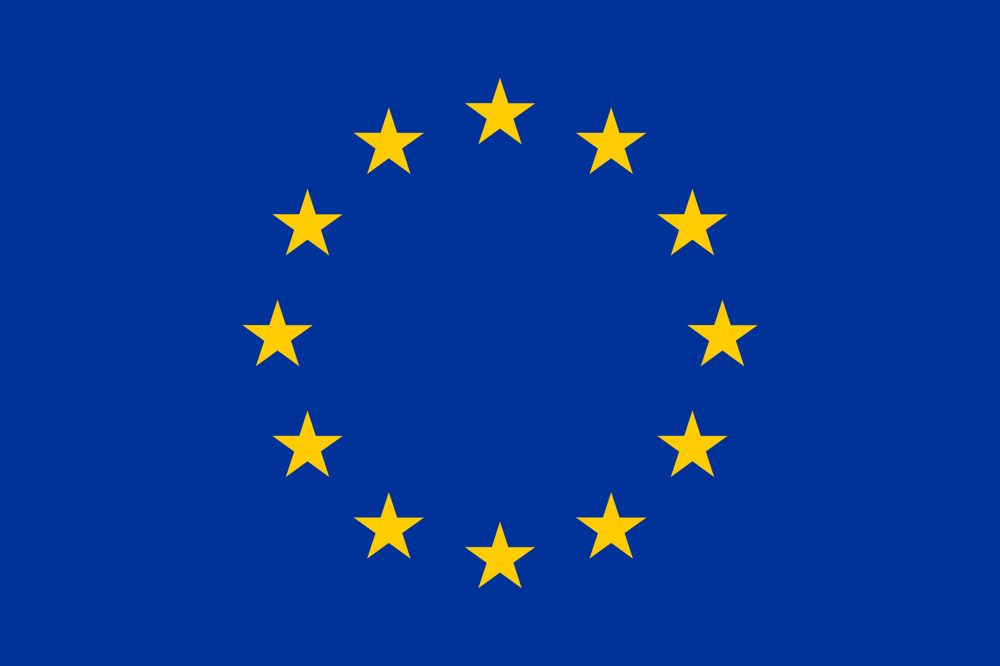

EU Presidency County Pairings
Every county has a European Pairing
Explore the connections that link the counties of Ireland to the countries of Europe.

The County Pairings Atlas
Start with a county
Select a county or use the accessible directory to begin discovering the pairings.
Loading county map…
Illustrative county geometry from Tailte Éireann, CC BY 4.0. Not a legal boundary record.
Selected profile
Choose a county
Cork is the published profile. The Atlas will expand only as local-to-local research is checked.
All 26 counties
26A Pairing becomes an EU Relationship
-
01
Choose a county
-
02
Research
-
03
Contribute
Transparency across the Contributions
- Verified Source is fact-checked.
- Under review Material submitted but not yet approved.
- Statement Unverified or anecdotal.
Next sections
Ireland’s EU Presidency County Pairings
About UCC Europa Society
Building the Project
Atlas
Share a story, source or statement.
Use the guided research brief. Nothing is published until its evidence, permissions and status are clear.